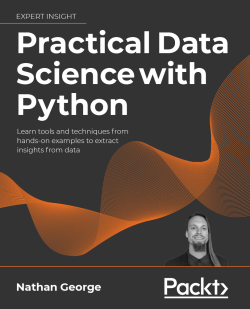

Practical Data Science with Python, by George
Monday December 13, 2021
Packt sent me a copy of this book to review. It's 621 pages with the best and worst characteristics of a typical data science boot camp: very broad, necessarily shallow, frequently not quite perfect. Even an imperfect map can tell you a lot about the territory, and it could be the right book for you.
George has pulled together a lot of material, some of it good. He includes introductory Python and command line, enough SQL to be confused about SQL, examples with Bitcoin prices, an idiosyncratic survey of visualization, web scraping, statistics, and the big machine learning models, including the big three boosted tree algorithms, which I appreciate. He includes some NLP, and even some on ethics.
George's own list of omissions (page 571) illustrates what he thinks is almost in scope:
- Recommender systems
- Networks and graph analysis
- Machine learning explainability
- Test-driven development (TDD)
- Reinforcement learning
- Neural networks
Maybe the moral is that “data science” is too big a topic for one book. Trying to pack so much in has a cost. Here's the complete section on “Paired t- and z-tests”:
One last type of t- or z-test is the paired test. This is for paired samples, like before-and-after treatments. For example, we could measure the blood pressure of people before and after taking a medication to see if there is an effect. A function that can be used for this is
scipy.stats.ttest_rel, which can be used like this:
scipy.stats.ttest_rel(before, after)This will return a t-statistic and p-value like with other
scipyt-test functions.
If you've never heard of a paired t-test before, it's great this book tells you about it. You can start to ask questions like: Why is this a separate test? Does it have some advantage over a regular t-test? Hopefully you also question some parts of the book, as when Bayesian methods are dismissed as “much more complex to implement than a t-test.”
This is a map that can point you in a lot of interesting directions, which is valuable!
